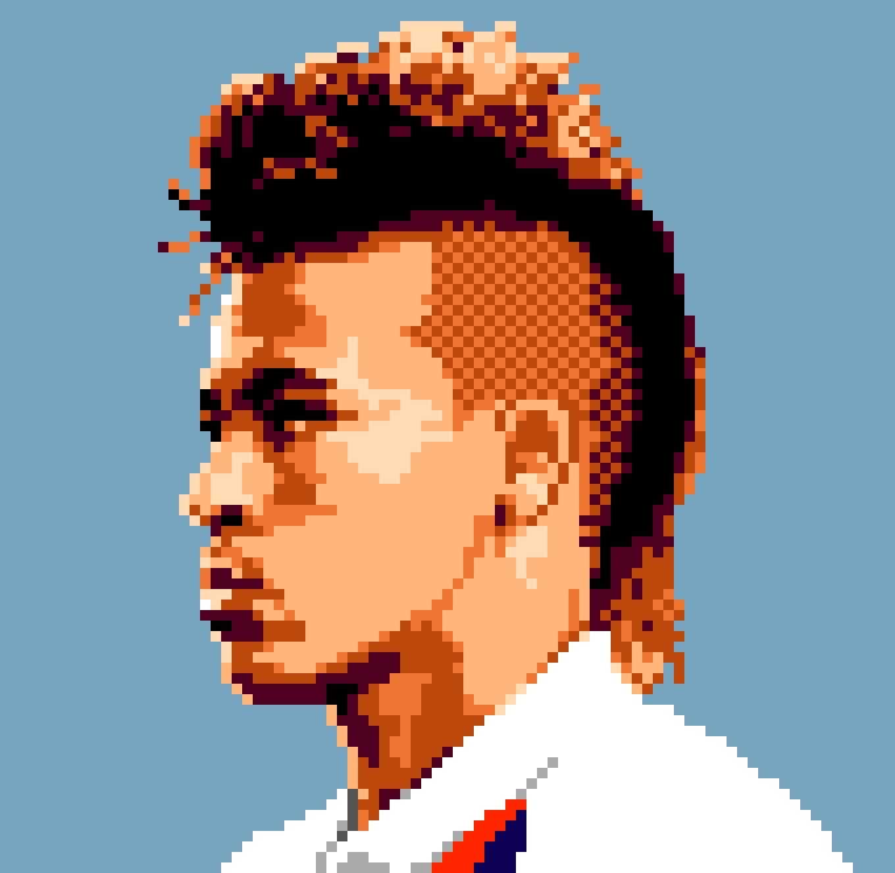

NeyFut
Sobre o Jogo
Neyfut Ajude o menino Ney a pegar todas as pedalhas de ouro e no final pegar a sonhada taça. Cada medalha capturada o Ney acumula 1 ponto e cada taça acumula 5 pontos, o jogo vai ficando mais difícil conforme o tempo, pois a velocidade vai aumentando, e termina se deixar algum objeto acumulativo tocar no chão. Tome cuidado, pois mulheres podem distrair o jogador.
